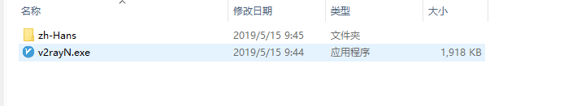

前言
v2rayN是windows上一款开源的v2ray客户端管理软件，项目地址 https://github.com/2dust/v2rayN
下载与配置v2rayN
1、下载v2rayN与v2ray核心程序
首先访问项目的发布页面：https://github.com/2dust/v2rayN/releases
在这个页面上，找到Latest release项，这里下载的是软件的最新版本，如果看到pre release,表示软件的测试版本。
点击v2rayN.zip，下载软件

下载完成之后，可以获得一个压缩包，解压该压缩包，打开软件，如下图所示：
打开之后，这里只是下载了v2ray的客户端管理工具，我们还要下载v2ray的客户端核心，依次点击检查更新，检查更新v2rayCore，
在是否下载询问框中，选择是（Y），此时,v2rayN将会下载v2ray核心
如果下载缓慢，可以点击这里下载
2、节点订阅
依次点击订阅，订阅设置按钮，在弹出的窗口中填写相应的信息，点击确定。
依次点击订阅，更新订阅按钮，软件将自动下载节点信息

自行选择自己喜欢的节点，敲击Enter键，即可将该节点设置为当前节点
3、开始使用
右键选择任务栏上v2ray图标，依次选择启动Http代理，开启并自动配置PAC（PAC模式），开始上网
3、查看v2rayN的监听端口
打开软件，点击参数设置按钮，在打开的窗口中，我们可以看到本地监听端口，后面文本框中的数字即是v2rayN此时监听的端口号，拿这个端口号，可以配合SwitchyOmega以达到更加自由的分流配置